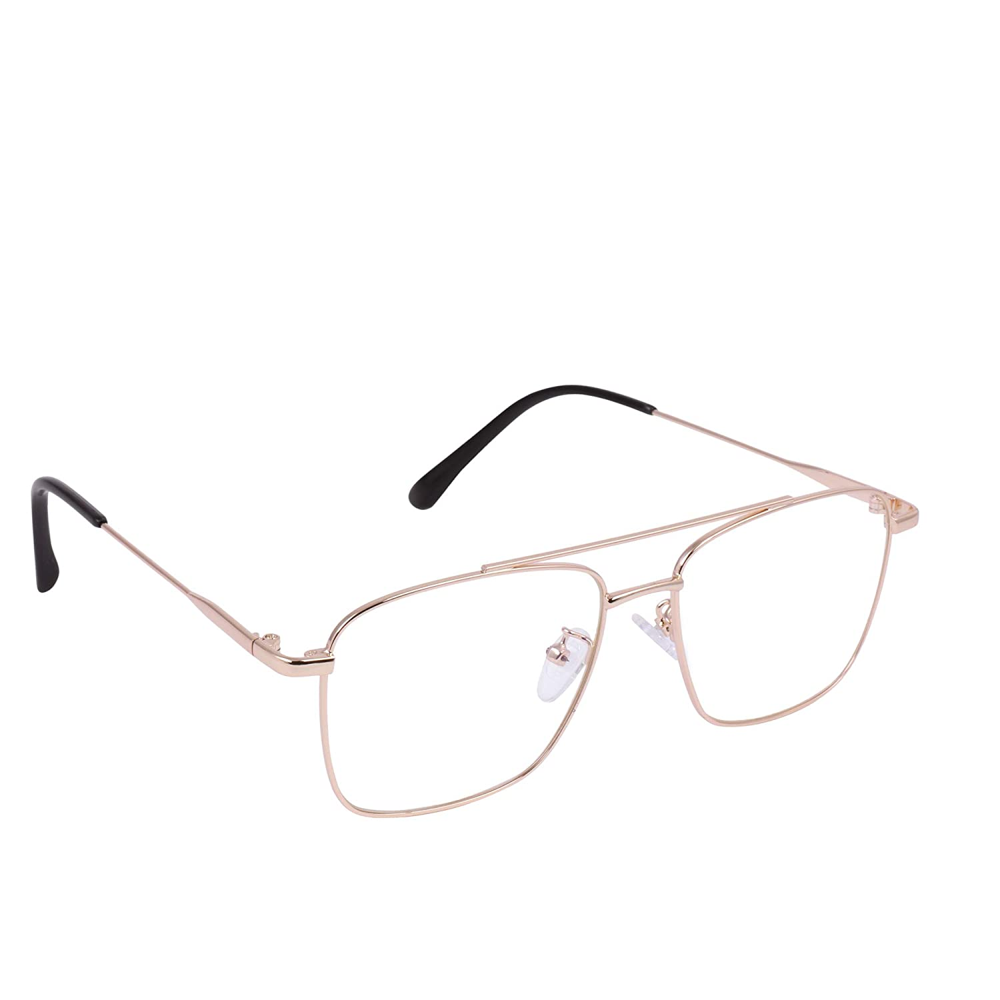
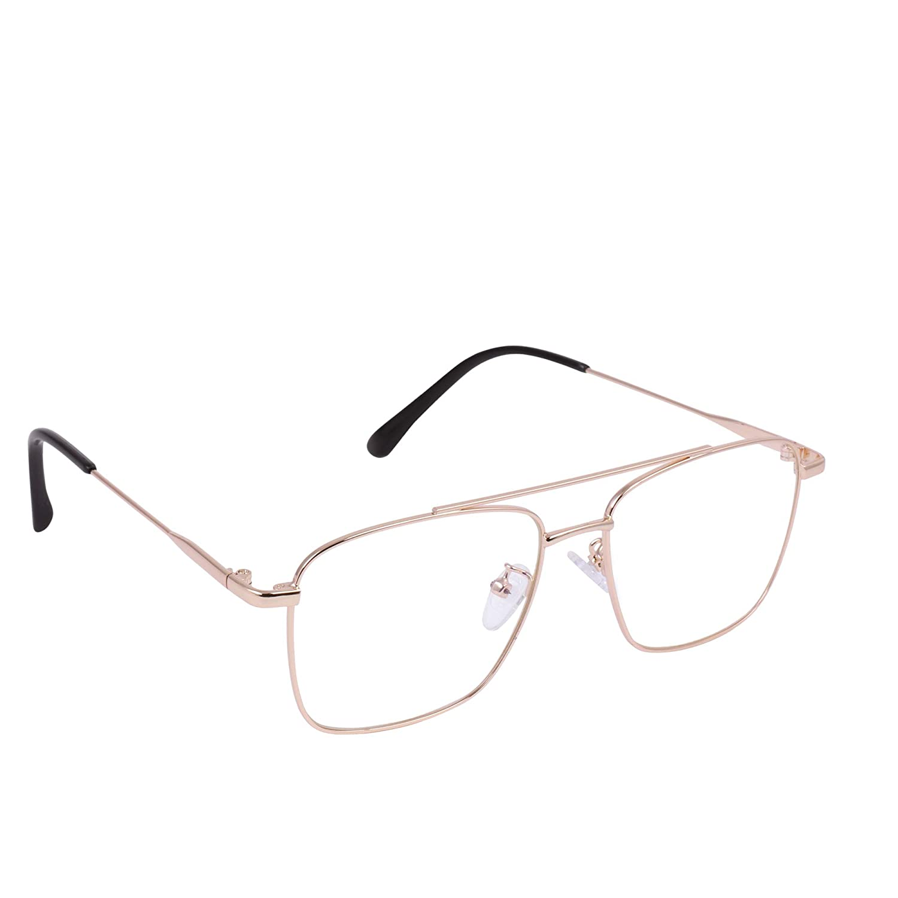

CASE STUDY BETWEEN GOOGLE LENS vs. MOBILENET

VS.
MOBILENET
-
Test image-
Output on GOOGLE LENS -purple wireless cat ear headphones
headphones
Output on MOBILENET - Gasmask, respirator, gas helmet
headphones
Result- GOOGLE LENS is more accurate
-
Test image-

Output on GOOGLE LENS -men's vans og old skool LX
shoes
Output on MOBILENET - Running shoes
shoes
Result- Both are correct
-
Test image-

Output on GOOGLE LENS -eye wear square metal
specs
Output on MOBILENET - Mouse, knot
specs
Result- GOOGLE LENS is more accurate
I have tested 3 images out of that MOBILENET gave only 1 corerect and others are wrong but GOOGLENS gave all accurate
VS.
MOBILENET
- Test image-
-
Test image-
- Test image- 